BoxCoxFactory¶
(Source code, png, hires.png, pdf)
{kind=link}
{kind=link}
-
class
BoxCoxFactory(*args)¶ BoxCox transformation estimator.
Notes
The class
BoxCoxFactoryenables to build a Box Cox transformation from data.The Box Cox transformation 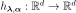 maps a sample into a new sample following a normal distribution with independent components. That sample may be the realization of a process as well as the realization of a distribution.
In the multivariate case, we proceed component by component: 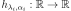 which writes:
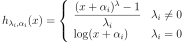
for all 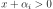.
BoxCox transformation could alse be performed in the case of the estimation of a general linear model through
GeneralLinearModelAlgorithm. The objective is to estimate the most likely surrogate model (general linear model) which links input data and 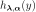.
and 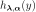.  are to be calibrated such as maximizing the general linear model’s likelihood function. In that context, a
are to be calibrated such as maximizing the general linear model’s likelihood function. In that context, a CovarianceModeland aBasishave to be fixedMethods
build(*args)Estimate the Box Cox transformation. getClassName()Accessor to the object’s name. getId()Accessor to the object’s id. getName()Accessor to the object’s name. getShadowedId()Accessor to the object’s shadowed id. getVisibility()Accessor to the object’s visibility state. hasName()Test if the object is named. hasVisibleName()Test if the object has a distinguishable name. setName(name)Accessor to the object’s name. setShadowedId(id)Accessor to the object’s shadowed id. setVisibility(visible)Accessor to the object’s visibility state. getOptimizationAlgorithm setOptimizationAlgorithm -
__init__(*args)¶ Initialize self. See help(type(self)) for accurate signature.
-
build(*args)¶ Estimate the Box Cox transformation.
- Available usages:
build(myTimeSeries)
build(myTimeSeries, shift)
build(myTimeSeries, shift, likelihoodGraph)
build(mySample)
build(mySample, shift)
build(mySample, shift, likelihoodGraph)
build(inputSample, outputSample, covarianceModel, basis, shift, generalLinearModelResult)
build(inputSample, outputSample, covarianceModel, shift, generalLinearModelResult)
Parameters: - myTimeSeries :
TimeSeries One realization of a process.
- mySample :
Sample A set of iid values.
- shift :
Point It ensures that when shifted, the data are all positive. By default the opposite of the min vector of the data is used if some data are negative.
- likelihoodGraph :
Graph An empty graph that is fulfilled later with the log-likelihood of the mapped variables with respect to the 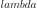 parameter for each component.
- inputSample, outputSample :
Sampleor 2d-array The input and output samples of a model evaluated apart.
- basis :
Basis Functional basis to estimate the trend. If the output dimension is greater than 1, the same basis is used for all marginals.
- multivariateBasis : collection of
Basis Collection of functional basis: one basis for each marginal output. If the trend is not estimated, the collection must be empty.
- covarianceModel :
CovarianceModel Covariance model. Should have spatial dimension equal to input sample’s dimension and dimension equal to output sample’s dimension. See note for some particular applications.
- generalLinearModelResult :
GeneralLinearModelResult Empty structure that contains results of general linear model algorithm.
Returns: - myBoxCoxTransform :
BoxCoxTransform The estimated Box Cox transformation.
Notes
We describe the estimation in the univariate case, in the case of no surrogate model estimate. Only the parameter
 is estimated. To clarify the notations, we omit the mention of
is estimated. To clarify the notations, we omit the mention of  in
in  .
.We note
 a sample of
a sample of  . We suppose that 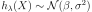.
. We suppose that 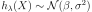.The parameters 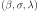 are estimated by the maximum likelihood estimators. We note 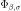 and
 respectively the cumulative distribution function and the density probability function of the
respectively the cumulative distribution function and the density probability function of the  distribution.
distribution.We have :
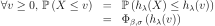
from which we derive the density probability function p of
: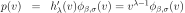
which enables to write the likelihood of the values
: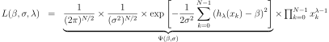
We notice that for each fixed
, the likelihood equation is proportional to the likelihood equation which estimates 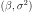.Thus, the maximum likelihood estimators for 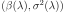 for a given
are :
Substituting these expressions in the likelihood equation and taking the 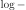 likelihood leads to:
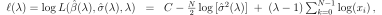
The parameter 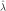 is the one maximising
 .
.When the empty graph likelihoodGraph is precised, it is fulfilled with the evolution of the likelihood with respect to the value of
for each component i. It enables to graphically detect the optimal values.In the case of surrogate model estimate, we note
the input sample of , 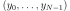 the input sample of  .
We suppose the general linear model link 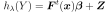 with 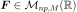:
.
We suppose the general linear model link 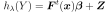 with 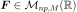:
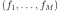 is a functional basis whith 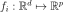 for all i,
 are the coefficients of the linear combination and 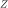 is a zero-mean gaussian process with a stationary covariance function 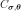
Thus implies that
are the coefficients of the linear combination and 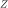 is a zero-mean gaussian process with a stationary covariance function 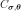
Thus implies that  .
.The likelihood function to be maximized writes as follows:
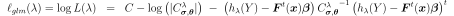
where 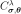 is the matrix resulted from the discretization of the covariance model over
.
The parameter is the one maximising  .
.Examples
Estimate the Box Cox transformation from a sample:
>>> import openturns as ot >>> mySample = ot.Exponential(2).getSample(10) >>> myBoxCoxFactory = ot.BoxCoxFactory() >>> myModelTransform = myBoxCoxFactory.build(mySample) >>> estimatedLambda = myModelTransform.getLambda()
Estimate the Box Cox transformation from a field:
>>> myIndices= ot.Indices([10, 5]) >>> myMesher=ot.IntervalMesher(myIndices) >>> myInterval = ot.Interval([0.0, 0.0], [2.0, 1.0]) >>> myMesh=myMesher.build(myInterval) >>> amplitude=[1.0] >>> scale=[0.2, 0.2] >>> myCovModel=ot.ExponentialModel(scale, amplitude) >>> myXproc=ot.GaussianProcess(myCovModel, myMesh) >>> g = ot.SymbolicFunction(['x1'], ['exp(x1)']) >>> myDynTransform = ot.ValueFunction(g, 2) >>> myXtProcess = ot.CompositeProcess(myDynTransform, myXproc)
>>> myField = myXtProcess.getRealization() >>> myModelTransform = ot.BoxCoxFactory().build(myField)
Estimation of a general linear model:
>>> inputSample = ot.Uniform(-1.0, 1.0).getSample(20) >>> outputSample = ot.Sample(inputSample) >>> # Evaluation of y = ax + b (a: scale, b: translate) >>> outputSample = outputSample * [3] + [3.1] >>> # inverse transfo + small noise >>> def f(x): import math; return [math.exp(x[0])] >>> inv_transfo = ot.PythonFunction(1,1, f) >>> outputSample = inv_transfo(outputSample) + ot.Normal(0, 1.0e-2).getSample(20) >>> # Estimation >>> result = ot.GeneralLinearModelResult() >>> basis = ot.LinearBasisFactory(1).build() >>> covarianceModel = ot.DiracCovarianceModel() >>> shift = [1.0e-1] >>> myBoxCox = ot.BoxCoxFactory().build(inputSample, outputSample, covarianceModel, basis, shift, result)
-
getClassName()¶ Accessor to the object’s name.
Returns: - class_name : str
The object class name (object.__class__.__name__).
-
getId()¶ Accessor to the object’s id.
Returns: - id : int
Internal unique identifier.
-
getName()¶ Accessor to the object’s name.
Returns: - name : str
The name of the object.
-
getShadowedId()¶ Accessor to the object’s shadowed id.
Returns: - id : int
Internal unique identifier.
-
getVisibility()¶ Accessor to the object’s visibility state.
Returns: - visible : bool
Visibility flag.
-
hasName()¶ Test if the object is named.
Returns: - hasName : bool
True if the name is not empty.
-
hasVisibleName()¶ Test if the object has a distinguishable name.
Returns: - hasVisibleName : bool
True if the name is not empty and not the default one.
-
setName(name)¶ Accessor to the object’s name.
Parameters: - name : str
The name of the object.
-
setShadowedId(id)¶ Accessor to the object’s shadowed id.
Parameters: - id : int
Internal unique identifier.
-
setVisibility(visible)¶ Accessor to the object’s visibility state.
Parameters: - visible : bool
Visibility flag.
-